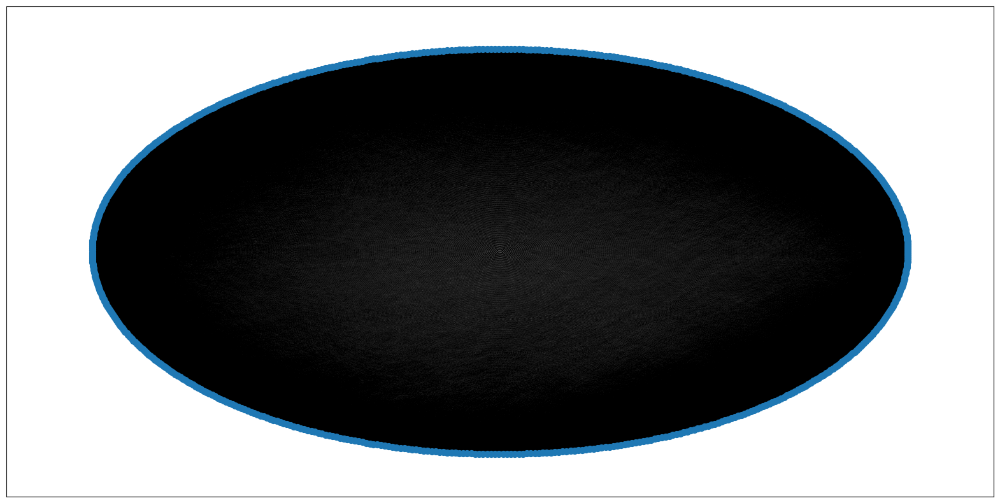

Grafon
Contents
Grafon#
Qué va a analizar nuestro grafo?#
Analizar “gente que haya tenido experiencias facultativas similares” -> sacamos el factor temporal
Qué queremos responder?#
Qué electivas curso?
Cómo es el grafo?#
Nodos: usuarios
Aristas: cursar misma materia y “les fue parecido” -> -1 (en el final), 4-5, 6-7, 8-10
Peso: porcentaje de similitud de materia+nota
Dos formas de armar el análisis#
sólo correr sobre materias electivas
correr sobre todas las materias, pero filtrar el output por electivas
Ejemplo de conexión:#
X y yo cursamos …
import pandas as pd
df = pd.read_pickle('fiuba-map-data.pickle')
df.tail(3)
| Padron | Carrera | Orientacion | Final de Carrera | materia_id | materia_nota | materia_cuatrimestre | aplazos | optativas | |
|---|---|---|---|---|---|---|---|---|---|
| 21327 | 42116191 | informatica | NaN | NaN | 61.03 | 0.0 | NaN | NaN | NaN |
| 21328 | 42116191 | informatica | NaN | NaN | 62.01 | 0.0 | NaN | NaN | NaN |
| 21329 | 42116191 | informatica | NaN | NaN | 75.40 | 0.0 | NaN | NaN | NaN |
categories = {
4: 0,
5: 0,
6: 1,
7: 1,
8: 2,
9: 2,
10: 2
}
df_rel = df[['Padron', 'materia_id', 'materia_nota']].copy()
# Sacamos materias en final y a cursar
df_rel = df_rel[df_rel['materia_nota'] >= 4]
# Sacamos gente que no le pone la nota a su fiubamap
df_rel['promedio'] = df_rel.groupby('Padron')['materia_nota'].transform('mean')
df_rel = df_rel[df_rel['promedio'] > 5]
df_rel['materia_categoria'] = df_rel['materia_nota'].apply(lambda x: categories[x])
df_simil = pd.merge(df_rel, df_rel, on=['materia_id', 'materia_categoria'])
df_simil = df_simil[df_simil['Padron_x'] != df_simil['Padron_y']]
df_simil = df_simil.reset_index()
df_simil
| index | Padron_x | materia_id | materia_nota_x | promedio_x | materia_categoria | Padron_y | materia_nota_y | promedio_y | |
|---|---|---|---|---|---|---|---|---|---|
| 0 | 1 | 102141 | CBC28 | 10.0 | 7.307692 | 2 | 104639 | 9.0 | 7.105263 |
| 1 | 2 | 102141 | CBC28 | 10.0 | 7.307692 | 2 | 111111 | 8.0 | 8.142857 |
| 2 | 3 | 102141 | CBC28 | 10.0 | 7.307692 | 2 | 107539 | 8.0 | 7.352941 |
| 3 | 4 | 102141 | CBC28 | 10.0 | 7.307692 | 2 | 108441 | 9.0 | 8.000000 |
| 4 | 5 | 102141 | CBC28 | 10.0 | 7.307692 | 2 | 103713 | 8.0 | 7.074074 |
| ... | ... | ... | ... | ... | ... | ... | ... | ... | ... |
| 1415143 | 1425533 | 99627 | 75.48 | 7.0 | 7.553191 | 1 | 98338 | 7.0 | 7.317073 |
| 1415144 | 1425534 | 93445 | 75.48 | 7.0 | 6.974359 | 1 | 99627 | 7.0 | 7.553191 |
| 1415145 | 1425536 | 93445 | 75.48 | 7.0 | 6.974359 | 1 | 98338 | 7.0 | 7.317073 |
| 1415146 | 1425537 | 98338 | 75.48 | 7.0 | 7.317073 | 1 | 99627 | 7.0 | 7.553191 |
| 1415147 | 1425538 | 98338 | 75.48 | 7.0 | 7.317073 | 1 | 93445 | 7.0 | 6.974359 |
1415148 rows × 9 columns
Esto resultaría en un grafo con pocos nodos y 1407892 de aristas, es decir demasiadas aristas. Por eso se busca un enfoque de unificar aristas mediante algún tipo de criterio y de esta forma tener sólo una arista entre padrones.
import numpy as np
df_simil_agg = df_simil.groupby(['Padron_x', 'Padron_y']).agg(cant=('materia_id', 'count'))
df_simil_agg = df_simil_agg.reset_index()
df_simil_agg['Padron_min'] = df_simil_agg[['Padron_x', 'Padron_y']].min(axis=1)
df_simil_agg['Padron_max'] = df_simil_agg[['Padron_x', 'Padron_y']].max(axis=1)
df_simil_agg = df_simil_agg.drop_duplicates(['Padron_min', 'Padron_max']).reset_index()
df_simil_agg['inv_cant'] = df_simil_agg['cant'].max() - df_simil_agg['cant'] + 1
df_simil_agg
| index | Padron_x | Padron_y | cant | Padron_min | Padron_max | inv_cant | |
|---|---|---|---|---|---|---|---|
| 0 | 0 | -1 | 0000 | 10 | -1 | 0000 | 26 |
| 1 | 1 | -1 | 02902 | 2 | -1 | 02902 | 34 |
| 2 | 2 | -1 | 100016 | 9 | -1 | 100016 | 27 |
| 3 | 3 | -1 | 100029 | 12 | -1 | 100029 | 24 |
| 4 | 4 | -1 | 100029asdasdasdasd | 4 | -1 | 100029asdasdasdasd | 32 |
| ... | ... | ... | ... | ... | ... | ... | ... |
| 176716 | 351688 | sadfsdfsdfgfasdfdsgsdfg | tplink | 4 | sadfsdfsdfgfasdfdsgsdfg | tplink | 32 |
| 176717 | 351689 | sadfsdfsdfgfasdfdsgsdfg | xasdasdasd | 13 | sadfsdfsdfgfasdfdsgsdfg | xasdasdasd | 23 |
| 176718 | 352278 | sadfsdfsdfgfdsgsdfg | tplink | 4 | sadfsdfsdfgfdsgsdfg | tplink | 32 |
| 176719 | 352279 | sadfsdfsdfgfdsgsdfg | xasdasdasd | 13 | sadfsdfsdfgfdsgsdfg | xasdasdasd | 23 |
| 176720 | 352852 | tplink | xasdasdasd | 3 | tplink | xasdasdasd | 33 |
176721 rows × 7 columns
df_simil_agg.sort_values('cant', ascending=False).head(25)
| index | Padron_x | Padron_y | cant | Padron_min | Padron_max | inv_cant | |
|---|---|---|---|---|---|---|---|
| 13214 | 13467 | 100687 | 99732 | 35 | 100687 | 99732 | 1 |
| 176402 | 338834 | 99616 | 99732 | 32 | 99616 | 99732 | 4 |
| 12692 | 12945 | 100687 | 102145 | 31 | 100687 | 102145 | 5 |
| 37637 | 39981 | 102145 | 102192 | 30 | 102145 | 102192 | 6 |
| 12698 | 12951 | 100687 | 102192 | 29 | 100687 | 102192 | 7 |
| 12753 | 13006 | 100687 | 103371 | 29 | 100687 | 103371 | 7 |
| 29072 | 30470 | 101601 | 102145 | 29 | 101601 | 102145 | 7 |
| 12071 | 12302 | 100680 | 101483 | 29 | 100680 | 101483 | 7 |
| 174004 | 310377 | 95897 | 99423 | 29 | 95897 | 99423 | 7 |
| 175314 | 322523 | 98124 | 98591 | 28 | 98124 | 98591 | 8 |
| 37639 | 39983 | 102145 | 102198 | 28 | 102145 | 102198 | 8 |
| 12669 | 12922 | 100687 | 101483 | 28 | 100687 | 101483 | 8 |
| 37672 | 40016 | 102145 | 102749 | 27 | 102145 | 102749 | 9 |
| 25402 | 26452 | 101483 | 102358 | 27 | 101483 | 102358 | 9 |
| 25387 | 26437 | 101483 | 102192 | 27 | 101483 | 102192 | 9 |
| 13205 | 13458 | 100687 | 99469 | 27 | 100687 | 99469 | 9 |
| 12048 | 12279 | 100680 | 100687 | 27 | 100680 | 100687 | 9 |
| 37706 | 40050 | 102145 | 103784 | 27 | 102145 | 103784 | 9 |
| 35885 | 37965 | 102103 | 200793 | 27 | 102103 | 200793 | 9 |
| 176341 | 337453 | 99469 | 99732 | 27 | 99469 | 99732 | 9 |
| 13208 | 13461 | 100687 | 99616 | 27 | 100687 | 99616 | 9 |
| 12078 | 12309 | 100680 | 101601 | 27 | 100680 | 101601 | 9 |
| 25910 | 26960 | 101483 | 99732 | 27 | 101483 | 99732 | 9 |
| 12626 | 12857 | 100680 | 99732 | 27 | 100680 | 99732 | 9 |
| 25815 | 26865 | 101483 | 200793 | 26 | 101483 | 200793 | 10 |
import networkx as nx
G = nx.from_pandas_edgelist(df_simil_agg,
source='Padron_x',
target='Padron_y',
edge_attr='inv_cant',
create_using=nx.Graph())
print(G)
Graph with 643 nodes and 176721 edges
G.edges[('-1', '0000')]
{'inv_cant': 26}
# Veamos el grafo
import matplotlib.pyplot as plt
plt.figure(figsize=(20,10))
nx.draw_networkx(G, pos=nx.circular_layout(G), width=0.005, node_size=50, with_labels=False)

Stats generales del grafo#
print(f"""
El diámetro de la red: {nx.diameter(G)}
El grado promedio de la red: {sum([n[1] for n in G.degree()]) / len(G):.2f}
TODO: Los allegados promedio de la red:
Puentes globales: {list(nx.bridges(G))}
""")
El diámetro de la red: 3
El grado promedio de la red: 549.68
TODO: Los allegados promedio de la red:
Puentes globales: []
Comunidades#
from networkx.algorithms import community
louvain = community.louvain_communities(G, weight='inv_cant', resolution=1.02)
len(louvain)
22
def padrones_similares(padron, resolution):
louvain = community.louvain_communities(G, weight='inv_cant', resolution=resolution)
return list(filter(lambda x: padron in x, louvain))[0]
def materias_padron(padron):
return df[(df['Padron'] == padron) & (df['materia_nota'] >= 4)]['materia_id'].values
def sugerir_electivas(padron, resolution=1):
padrones = padrones_similares(padron, resolution)
df_sugerencias = df_rel[df_rel['Padron'].isin(padrones)].groupby('materia_id').agg(cant=('materia_id', 'count'))
df_sugerencias = df_sugerencias[~df_sugerencias.index.isin(materias_padron(padron))]
df_materias = pd.read_csv('informatica.csv')
df_sugerencias = pd.merge(df_sugerencias, df_materias, on='materia_id')
df_sugerencias = df_sugerencias[df_sugerencias['categoria'] == 'Materias Electivas']
df_sugerencias = df_sugerencias[['materia_id', 'materia_nombre', 'creditos', 'cant']].sort_values('cant', ascending=False)
return df_sugerencias.reset_index(drop=True)
sugerir_electivas('100687', 1.03)
---------------------------------------------------------------------------
FileNotFoundError Traceback (most recent call last)
Cell In [11], line 20
17 df_sugerencias = df_sugerencias[['materia_id', 'materia_nombre', 'creditos', 'cant']].sort_values('cant', ascending=False)
18 return df_sugerencias.reset_index(drop=True)
---> 20 sugerir_electivas('100687', 1.03)
Cell In [11], line 13, in sugerir_electivas(padron, resolution)
10 df_sugerencias = df_rel[df_rel['Padron'].isin(padrones)].groupby('materia_id').agg(cant=('materia_id', 'count'))
11 df_sugerencias = df_sugerencias[~df_sugerencias.index.isin(materias_padron(padron))]
---> 13 df_materias = pd.read_csv('informatica.csv')
14 df_sugerencias = pd.merge(df_sugerencias, df_materias, on='materia_id')
15 df_sugerencias = df_sugerencias[df_sugerencias['categoria'] == 'Materias Electivas']
File ~/.local/lib/python3.10/site-packages/pandas/util/_decorators.py:211, in deprecate_kwarg.<locals>._deprecate_kwarg.<locals>.wrapper(*args, **kwargs)
209 else:
210 kwargs[new_arg_name] = new_arg_value
--> 211 return func(*args, **kwargs)
File ~/.local/lib/python3.10/site-packages/pandas/util/_decorators.py:317, in deprecate_nonkeyword_arguments.<locals>.decorate.<locals>.wrapper(*args, **kwargs)
311 if len(args) > num_allow_args:
312 warnings.warn(
313 msg.format(arguments=arguments),
314 FutureWarning,
315 stacklevel=find_stack_level(inspect.currentframe()),
316 )
--> 317 return func(*args, **kwargs)
File ~/.local/lib/python3.10/site-packages/pandas/io/parsers/readers.py:950, in read_csv(filepath_or_buffer, sep, delimiter, header, names, index_col, usecols, squeeze, prefix, mangle_dupe_cols, dtype, engine, converters, true_values, false_values, skipinitialspace, skiprows, skipfooter, nrows, na_values, keep_default_na, na_filter, verbose, skip_blank_lines, parse_dates, infer_datetime_format, keep_date_col, date_parser, dayfirst, cache_dates, iterator, chunksize, compression, thousands, decimal, lineterminator, quotechar, quoting, doublequote, escapechar, comment, encoding, encoding_errors, dialect, error_bad_lines, warn_bad_lines, on_bad_lines, delim_whitespace, low_memory, memory_map, float_precision, storage_options)
935 kwds_defaults = _refine_defaults_read(
936 dialect,
937 delimiter,
(...)
946 defaults={"delimiter": ","},
947 )
948 kwds.update(kwds_defaults)
--> 950 return _read(filepath_or_buffer, kwds)
File ~/.local/lib/python3.10/site-packages/pandas/io/parsers/readers.py:605, in _read(filepath_or_buffer, kwds)
602 _validate_names(kwds.get("names", None))
604 # Create the parser.
--> 605 parser = TextFileReader(filepath_or_buffer, **kwds)
607 if chunksize or iterator:
608 return parser
File ~/.local/lib/python3.10/site-packages/pandas/io/parsers/readers.py:1442, in TextFileReader.__init__(self, f, engine, **kwds)
1439 self.options["has_index_names"] = kwds["has_index_names"]
1441 self.handles: IOHandles | None = None
-> 1442 self._engine = self._make_engine(f, self.engine)
File ~/.local/lib/python3.10/site-packages/pandas/io/parsers/readers.py:1729, in TextFileReader._make_engine(self, f, engine)
1727 is_text = False
1728 mode = "rb"
-> 1729 self.handles = get_handle(
1730 f,
1731 mode,
1732 encoding=self.options.get("encoding", None),
1733 compression=self.options.get("compression", None),
1734 memory_map=self.options.get("memory_map", False),
1735 is_text=is_text,
1736 errors=self.options.get("encoding_errors", "strict"),
1737 storage_options=self.options.get("storage_options", None),
1738 )
1739 assert self.handles is not None
1740 f = self.handles.handle
File ~/.local/lib/python3.10/site-packages/pandas/io/common.py:857, in get_handle(path_or_buf, mode, encoding, compression, memory_map, is_text, errors, storage_options)
852 elif isinstance(handle, str):
853 # Check whether the filename is to be opened in binary mode.
854 # Binary mode does not support 'encoding' and 'newline'.
855 if ioargs.encoding and "b" not in ioargs.mode:
856 # Encoding
--> 857 handle = open(
858 handle,
859 ioargs.mode,
860 encoding=ioargs.encoding,
861 errors=errors,
862 newline="",
863 )
864 else:
865 # Binary mode
866 handle = open(handle, ioargs.mode)
FileNotFoundError: [Errno 2] No such file or directory: 'informatica.csv'